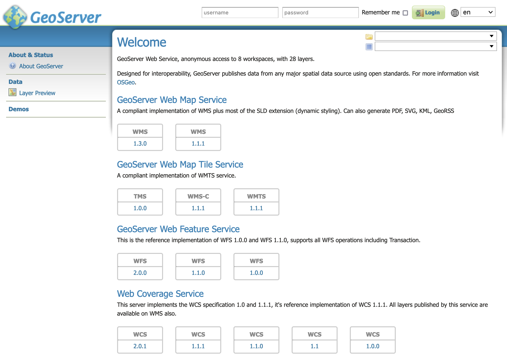

Docker Container¶
Geoserver is also packaged as a Docker Container. For more details, see the Geoserver Docker Container Project.
See the README.md file for more technical information.
Quick Start¶
This will run the container, with the data directory included with the container:
Make sure you have Docker installed.
Download the container:
These instructions are for GeoServer 2.22.4.
docker pull docker.osgeo.org/geoserver:2.22.4
Run the container
docker run -it -p8080:8080 docker.osgeo.org/geoserver:2.22.4
In a web browser, navigate to
http://localhost:8080/geoserver.If you see the GeoServer Welcome page, then GeoServer is successfully installed.
GeoServer Welcome Page¶
This setup is a quick test to ensure the software is working, but is difficult to use as file data can only be transferred to the data directory included with the container via the REST API.
Using your own Data Directory¶
This will run the container with a local data directory. The data directory will be mounted into the docker container.
Note
Change /MY/DATADIRECTORY to your data directory. If this directory is empty it will be populated with the standard Geoserver Sample Data Directory.
Make sure you have Docker installed.
Download the container
docker pull docker.osgeo.org/geoserver:2.22.4
Run the container
docker run --mount type=bind,src=/MY/DATADIRECTORY,target=/opt/geoserver_data -it -p8080:8080 docker.osgeo.org/geoserver:2.22.4
In a web browser, navigate to
http://localhost:8080/geoserver.If you see the GeoServer Welcome page, then GeoServer is successfully installed.
GeoServer Welcome Page¶
This setup allows direct management of the file data shared with the container. This setup is also easy to update to use the latest container.
Adding GeoServer Extensions¶
You can add GeoServer Extensions - the container will download them during startup.
docker run -it -p8080:8080 \ --env INSTALL_EXTENSIONS=true \ --env STABLE_EXTENSIONS="ysld,h2" \ docker.osgeo.org/geoserver:2.22.4
This will download and install the YSLD and H2 extension.
Here is a list of available extensions (taken from the build server):
app-schema gdal jp2k ogr-wps web-resource
authkey geofence libjpeg-turbo oracle wmts-multi-dimensional
cas geofence-server mapml params-extractor wps-cluster-hazelcast
charts geopkg-output mbstyle printing wps-cluster-hazelcast
control-flow grib mongodb pyramid wps-download
css gwc-s3 monitor querylayer wps-jdbc
csw h2 mysql sldservice wps
db2 imagemap netcdf-out sqlserver xslt
dxf importer netcdf vectortiles ysld
excel inspire ogr-wfs wcs2_0-eo
Testing Geoserver Community modules¶
Working with a Nightly build is a good way to test community modules and provide feedback to developers working on new functionality.
To work with community modules you must be using the GeoServer 2.22.x nightly build that matches the community module build:
docker run -it -p8080:8080 \ --env INSTALL_EXTENSIONS=true \ --env STABLE_EXTENSIONS="ysld,h2" \ --env COMMUNITY_EXTENSIONS="ogcapi" \ docker.osgeo.org/geoserver:2.22.x
For the current list see GeoServer build server.
activeMQ-broker jdbcconfig pgraster
backup-restore jdbcstore proxy-base-ext
cog jms-cluster s3-geotiff
colormap libdeflate saml
cov-json mbtiles sec-keycloak
dds mbtiles-store sec-oauth2-geonode
dyndimension mongodb-schemaless sec-oauth2-github
elasticsearch ncwms sec-oauth2-google
features-templating netcdf-ghrsst sec-oauth2-openid-connect
flatgeobuf notification smart-data-loader
gdal-wcs nsg-wmts-profile solr
gdal-wps ogcapi-coverages spatialjson
geopkg ogcapi-dggs stac-datastore
gpx ogcapi-features taskmanager-core
gsr ogcapi-images taskmanager-s3
gwc-azure-blobstore ogcapi-maps teradata
gwc-distributed ogcapi-styles vector-mosaic
gwc-mbtiles ogcapi-tiled-features vsi
gwc-sqlite ogcapi-tiles webp
hz-cluster ogr-datastore wms-eo
importer-jdbc opensearch-eo wmts-styles
jdbc-metrics ows-simulate wps-remote